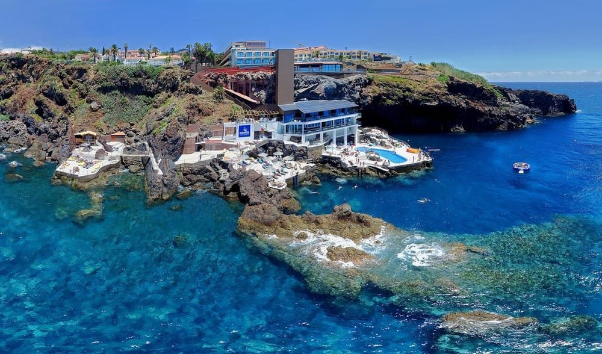

Descoperiți Madeira - O călătorie în insula paradis
Madeira este o insulă tropicală de vis, oferind o varietate de atracții captivante pentru vizitatori:
-

Vârful Pico do Areeiro - Panorame uluitoare
Această înălțime oferă priveliști impresionante asupra insulei, cu vederi spre munți, văi și oceanul înconjurător.
-

Centrul vechi din Funchal - Atmosferă pitorească
Străzile înguste și pavate din centrul vechi al orașului Funchal abundă în cafenele, magazine tradiționale și istorie.
-

Plimbare pe levade - Aventură în natură
Explorați rețeaua unică de canale și trasee de munte care oferă ocazia să descoperiți peisaje rurale fermecătoare.
-

Grădina Botanică - Paradis floral
Această grădină splendidă găzduiește o diversitate impresionantă de plante exotice și endemice din Madeira.
-

Plaja Seixal - Relaxare pe malul oceanului
O plajă cu nisip negru înconjurată de stânci spectaculoase și valurile oceanului Atlantic.
Concluzii
Madeira oferă o escapadă tropicală unică, îmbinând peisajele naturale cu autenticitatea insulei.